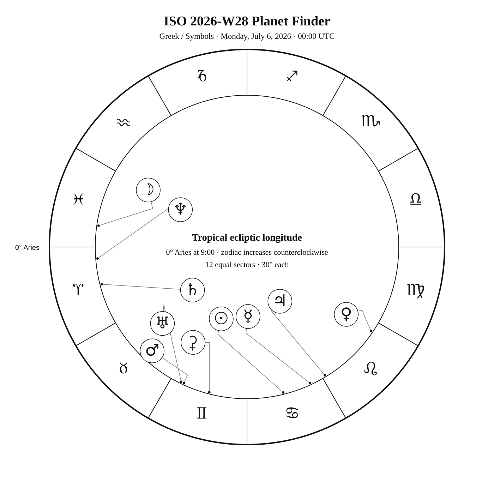
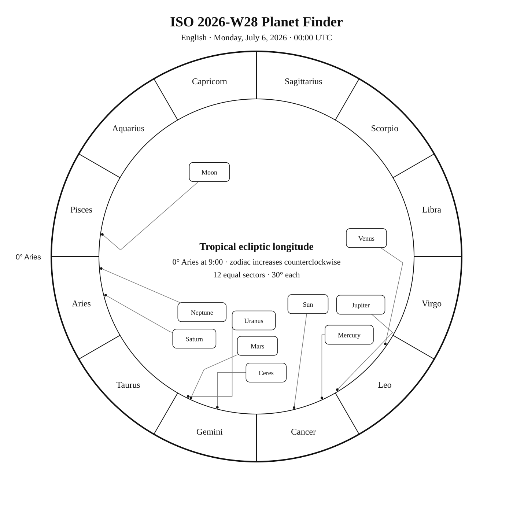
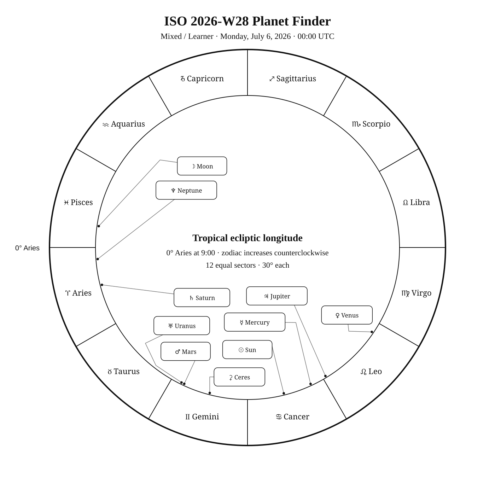

ISO 2026-W28
ISO dates: 2026-W28-1 through 2026-W28-7
Civil dates: Jul 6, 2026 – Jul 12, 2026
Calendar
| Date | Zodiac day | Events |
|---|---|---|
| Mon, Jul 6, 2026 | ♋ 16Summer 16 | Dschubba (δ Sco) —  Var 2 2.3 1.9–2.3 — Tropical Summer Var 2 2.3 1.9–2.3 — Tropical Summer |
| Tue, Jul 7, 2026 | ♋ 17Summer 17 | Norma center — Constellation —  V 4.6 — Southern Summer V 4.6 — Southern SummerTriangulum Australe center — Constellation — V 2.9 — Southern SummerC95, NGC 6025, open cluster in Triangulum Australe — V 5.1 — Southern Summer🌗 Last Quarter — 19:28:59 UTC C95 / NGC 6025 —  5 5.1 — Southern Summer 5 5.1 — Southern SummerAcrab (β1 Sco) — 3 2.6 — Tropical Summerβ2 Sco — 5 4.9 — Tropical SummerNeptune retrograde station — 10:54:57 UTC · Apparent motion in geocentric ecliptic longitude turns westward (retrograde) against the background stars. |
| Wed, Jul 8, 2026 | ♋ 18Summer 18 | |
| Thu, Jul 9, 2026 | ♋ 19Summer 19 | |
| Fri, Jul 10, 2026 | ♋ 20Summer 20 | Apus center — Constellation — V 4.0 — Antarctic SummerM80 — 7 7.3 — Tropical SummerC89 / NGC 6087 · S Normae Cluster — 5 5.4 — Southern Summer |
| Sat, Jul 11, 2026 | ♋ 21Summer 21 | Scorpius's Fishhook center — Asterism — V 1.1 — Southern Summer |
| Sun, Jul 12, 2026 | ♋ 22Summer 22 | C75, NGC 6124, open cluster in Scorpius — V 5.8 — Southern SummerC107, NGC 6101, globular cluster in Apus — V 9.3 — Antarctic SummerM4 — 6 5.6 — Southern SummerC75 / NGC 6124 — 6 5.8 — Southern SummerC107 / NGC 6101 — 9 9.3 — Antarctic Summer |
Weekly Solar-System Ephemeris
Snapshot: Week begins July 6, 2026, 00:00 UTC.
(-90° to +90°; defaults +45°, 21:00 LAT)
| Body | ☉︎ | ☽︎ | ☿︎ | ♀︎ | ♂︎ | ♃︎ | ♄︎ |
|---|---|---|---|---|---|---|---|
| Ecliptic | ♋︎ 13°58′ β +0°00′ | ♓︎ 21°50′ β +1°52′ | ♋︎ 24°49′ β −3°45′ | ♌︎ 25°50′ β +1°36′ | ♊︎ 5°06′ β −0°14′ | ♌︎ 1°14′ β +0°27′ | ♈︎ 14°23′ β −2°24′ |
| Observing |  | -10.8 | ☉︎ | -4.1 | 1.3 | ☉︎ | 0.8 |
| Rise | 04:15 | 22:30 | 05:26 | 07:50 | 01:39 | 05:43 | 23:40 |
| Set | 19:45 | 10:23 | 20:01 | 21:58 | 16:45 | 20:45 | 12:13 |
Extended targets:
| Body | ⚳︎ | ♅︎ | ♆︎ | ♇︎ |
|---|---|---|---|---|
| Ecliptic | ♊︎ 15°27′ β −2°10′ | ♊︎ 3°57′ β −0°09′ | ♈︎ 4°25′ β −1°22′ | ♒︎ 4°46′ β −4°14′ |
| Observing | 9.0 | 5.8 | 7.8 | 14.5 |
| Rise | 02:26 | 01:35 | 23:13 | 21:10 |
| Set | 17:28 | 16:40 | 11:23 | 05:54 |
β = ecliptic latitude (+ north, − south).
Rise and set are Local Apparent Time for the selected latitude.
Naked-eye observing uses the Sun’s altitude at the selected Monday observer time: Daylight (Sun ≥ −0.833°), Civil twilight (−0.833° to −6°), Nautical twilight (−6° to −12°), Astronomical twilight (−12° to −18°), and Night (below −18°).
Solar Glare identifies a body too close to the Sun when the sky-state rule does not already supersede its naked-eye classification.
The Sun’s observing status uses this same five-state sky classification.
Planet Finder



Sky Notes
Kilroy: Sky Notes · generated 2026-10-22 04:11:39 UTC
ISO 2026-W28 runs from July 6 through July 12. Mars and Uranus are separated by about 1.1° in geocentric ecliptic longitude at the Monday 00:00 UTC snapshot. To find Venus, first identify Leo, trace the Sickle, and locate Regulus in that pattern. Venus lies about 4.0° away in ecliptic longitude at the Monday 00:00 UTC snapshot; use the finder to transfer from Regulus to the planet.


Naked eye: 🌗 Last Quarter — 19:28:59 UTC. Moderate moonlight makes timing and local sky position important for faint targets. Use Dschubba, Acrab as the week’s fixed-sky framework.
Planets: Moon: Naked eye; magnitude -10.8; direct motion; 68.9% illuminated. Below the horizon at 21:00 local apparent solar time, 45°N. Monday 00:00 UTC snapshot. Conjunction with Mars in ecliptic longitude Jul 11 13:16 UTC. Conjunction with Ceres in ecliptic longitude Jul 12 03:32 UTC. Conjunction with Saturn in ecliptic longitude Jul 07 17:14 UTC. Conjunction with Uranus in ecliptic longitude Jul 11 05:30 UTC. Conjunction with Neptune in ecliptic longitude Jul 06 23:11 UTC. Mercury: In solar glare; magnitude 3.6; retrograde motion; 5.0% illuminated. Monday 00:00 UTC snapshot. Venus: Naked eye; magnitude -4.1; direct motion; 67.2% illuminated. Monday 00:00 UTC snapshot. Mars: Naked eye; magnitude 1.3; direct motion; 94.9% illuminated. Below the horizon at 21:00 local apparent solar time, 45°N. Monday 00:00 UTC snapshot. Conjunction with Moon in ecliptic longitude Jul 11 13:16 UTC. Ceres: Telescope; magnitude 9.0; direct motion; 99.2% illuminated. Below the horizon at 21:00 local apparent solar time, 45°N. Monday 00:00 UTC snapshot. Conjunction with Moon in ecliptic longitude Jul 12 03:32 UTC. Jupiter: In solar glare; magnitude -1.8; direct motion; 99.9% illuminated. Monday 00:00 UTC snapshot. Saturn: Naked eye; magnitude 0.8; direct motion; 99.7% illuminated. Below the horizon at 21:00 local apparent solar time, 45°N. Monday 00:00 UTC snapshot. Conjunction with Moon in ecliptic longitude Jul 07 17:14 UTC. Uranus: Binoculars; magnitude 5.8; direct motion; 100.0% illuminated. Below the horizon at 21:00 local apparent solar time, 45°N. Monday 00:00 UTC snapshot. Conjunction with Moon in ecliptic longitude Jul 11 05:30 UTC. Neptune: Telescope; magnitude 7.8; direct motion; 100.0% illuminated. Below the horizon at 21:00 local apparent solar time, 45°N. Monday 00:00 UTC snapshot. Station Jul 07 10:54 UTC: turns retrograde. Conjunction with Moon in ecliptic longitude Jul 06 23:11 UTC. Pluto: Substantial telescope; magnitude 14.5; retrograde motion; 100.0% illuminated. Below the horizon at 21:00 local apparent solar time, 45°N. Monday 00:00 UTC snapshot.


Binoculars: Trace the charted figure of Sco, then identify Beta2 Sco at its plotted position.
Small telescope: NGC 6025: consult its dedicated finder and observing story for equipment guidance; M80: consult its dedicated finder and observing story for equipment guidance; S Normae Cluster: consult its dedicated finder and observing story for equipment guidance; M4: consult its dedicated finder and observing story for equipment guidance; NGC 6124: consult its dedicated finder and observing story for equipment guidance; NGC 6101: consult its dedicated finder and observing story for equipment guidance
Substantial telescope: No fixed-sky Calendar object is classified as requiring a substantial telescope this week.
Other objects listed this week: None
Mercury
Mercury: in solar glare at the Monday 00:00 UTC snapshot. Rises 05:26; sets 20:01 (45°N, local apparent solar time). Visual magnitude 3.6. The disk is 5.0% illuminated (crescent). It is 11.5° from the Sun, on its east side. Motion is retrograde at 0.442° per day in ecliptic longitude at the snapshot. Position reference: Gomeisa, 10.0° away. Mercury: 10.0° from Gomeisa in the Pathfinder.
Venus
Venus: naked eye at the Monday 00:00 UTC snapshot. At 45°N and 21:00 local apparent solar time, it is 9.2° above the horizon. Rises 07:50; sets 21:58 (45°N, local apparent solar time). Visual magnitude -4.1. The disk is 67.2% illuminated (gibbous). It is 41.9° from the Sun, on its east side. Motion is direct at 1.123° per day in ecliptic longitude at the snapshot. Position reference: Regulus, 4.5° away. Venus: 4.5° from Regulus in the Pathfinder.
Moon
Moon: naked eye at the Monday 00:00 UTC snapshot. At 45°N and 21:00 local apparent solar time, it is 16.3° below the horizon. Rises 22:30; sets 10:23 (45°N, local apparent solar time). Visual magnitude -10.8. The disk is 68.9% illuminated (waning gibbous). It is 112.1° from the Sun, on its west side. Motion is direct at 12.864° per day in ecliptic longitude at the snapshot. Position reference: Fumalsamakah, 7.7° away. Conjunction with Mars in ecliptic longitude Jul 11 13:16 UTC. Conjunction with Ceres in ecliptic longitude Jul 12 03:32 UTC. Conjunction with Saturn in ecliptic longitude Jul 07 17:14 UTC. Conjunction with Uranus in ecliptic longitude Jul 11 05:30 UTC. Conjunction with Neptune in ecliptic longitude Jul 06 23:11 UTC. Moon: 7.7° from Fumalsamakah in the Pathfinder.
Mars
Mars: naked eye at the Monday 00:00 UTC snapshot. At 45°N and 21:00 local apparent solar time, it is 24.1° below the horizon. Rises 01:39; sets 16:45 (45°N, local apparent solar time). Visual magnitude 1.3. The disk is 94.9% illuminated (gibbous). It is 38.9° from the Sun, on its west side. Motion is direct at 0.706° per day in ecliptic longitude at the snapshot. Position reference: Aldebaran, 7.3° away. Uranus is 1.2° away at the snapshot. Conjunction with Moon in ecliptic longitude Jul 11 13:16 UTC. Mars: 7.3° from Aldebaran in the Pathfinder.
Jupiter
Jupiter: in solar glare at the Monday 00:00 UTC snapshot. Rises 05:43; sets 20:45 (45°N, local apparent solar time). Visual magnitude -1.8. The disk is 99.9% illuminated (nearly full). It is 17.3° from the Sun, on its east side. Motion is direct at 0.217° per day in ecliptic longitude at the snapshot. Position reference: Pollux, 9.9° away. Jupiter: 9.9° from Pollux in the Pathfinder.
Saturn
Saturn: naked eye at the Monday 00:00 UTC snapshot. At 45°N and 21:00 local apparent solar time, it is 26.8° below the horizon. Rises 23:40; sets 12:13 (45°N, local apparent solar time). Visual magnitude 0.8. The disk is 99.7% illuminated (nearly full). It is 89.6° from the Sun, on its west side. Motion is direct at 0.035° per day in ecliptic longitude at the snapshot. Position reference: Alrescha, 16.7° away. Conjunction with Moon in ecliptic longitude Jul 07 17:14 UTC. Saturn: 16.7° from Alrescha in the Pathfinder.
Uranus
Uranus: binoculars at the Monday 00:00 UTC snapshot. At 45°N and 21:00 local apparent solar time, it is 24.3° below the horizon. Rises 01:35; sets 16:40 (45°N, local apparent solar time). Visual magnitude 5.8. The disk is 100.0% illuminated (nearly full). It is 40.0° from the Sun, on its west side. Motion is direct at 0.048° per day in ecliptic longitude at the snapshot. Position reference: Aldebaran, 8.2° away. Mars is 1.2° away at the snapshot. Conjunction with Moon in ecliptic longitude Jul 11 05:30 UTC. Uranus: 8.2° from Aldebaran in the Pathfinder.
Neptune
Neptune: telescope at the Monday 00:00 UTC snapshot. At 45°N and 21:00 local apparent solar time, it is 23.3° below the horizon. Rises 23:13; sets 11:23 (45°N, local apparent solar time). Visual magnitude 7.8. The disk is 100.0% illuminated (nearly full). It is 99.5° from the Sun, on its west side. Motion is direct at 0.001° per day in ecliptic longitude at the snapshot. Position reference: Fumalsamakah, 18.6° away. Station Jul 07 10:54 UTC: turns retrograde. Conjunction with Moon in ecliptic longitude Jul 06 23:11 UTC. Neptune: 18.6° from Fumalsamakah in the Pathfinder.
Ceres
Ceres: telescope at the Monday 00:00 UTC snapshot. At 45°N and 21:00 local apparent solar time, it is 23.3° below the horizon. Rises 02:26; sets 17:28 (45°N, local apparent solar time). Visual magnitude 9.0. The disk is 99.2% illuminated (nearly full). It is 28.6° from the Sun, on its west side. Motion is direct at 0.400° per day in ecliptic longitude at the snapshot. Position reference: Aldebaran, 6.2° away. Conjunction with Moon in ecliptic longitude Jul 12 03:32 UTC. Ceres: 6.2° from Aldebaran in the Pathfinder.
Pluto
Pluto: substantial telescope at the Monday 00:00 UTC snapshot. At 45°N and 21:00 local apparent solar time, it is 2.1° below the horizon. Rises 21:10; sets 05:54 (45°N, local apparent solar time). Visual magnitude 14.5. The disk is 100.0% illuminated (nearly full). It is 158.8° from the Sun, on its west side. Motion is retrograde at 0.021° per day in ecliptic longitude at the snapshot. Position reference: Dabih, 8.8° away. Pluto: 8.8° from Dabih in the Pathfinder.
Highlights
Mercury
In solar glare; magnitude 3.6; retrograde motion; 5.0% illuminated. Monday 00:00 UTC snapshot. Mercury: 10.0° from Gomeisa in the Pathfinder.
Venus
Naked eye; magnitude -4.1; direct motion; 67.2% illuminated. Monday 00:00 UTC snapshot. Venus: 4.5° from Regulus in the Pathfinder.
Moon
Naked eye; magnitude -10.8; direct motion; 68.9% illuminated. Below the horizon at 21:00 local apparent solar time, 45°N. Monday 00:00 UTC snapshot. Conjunction with Mars in ecliptic longitude Jul 11 13:16 UTC. Conjunction with Ceres in ecliptic longitude Jul 12 03:32 UTC. Conjunction with Saturn in ecliptic longitude Jul 07 17:14 UTC. Conjunction with Uranus in ecliptic longitude Jul 11 05:30 UTC. Conjunction with Neptune in ecliptic longitude Jul 06 23:11 UTC. Moon: 7.7° from Fumalsamakah in the Pathfinder.
Mars
Naked eye; magnitude 1.3; direct motion; 94.9% illuminated. Below the horizon at 21:00 local apparent solar time, 45°N. Monday 00:00 UTC snapshot. Conjunction with Moon in ecliptic longitude Jul 11 13:16 UTC. Mars: 7.3° from Aldebaran in the Pathfinder.
Jupiter
In solar glare; magnitude -1.8; direct motion; 99.9% illuminated. Monday 00:00 UTC snapshot. Jupiter: 9.9° from Pollux in the Pathfinder.
Saturn
Naked eye; magnitude 0.8; direct motion; 99.7% illuminated. Below the horizon at 21:00 local apparent solar time, 45°N. Monday 00:00 UTC snapshot. Conjunction with Moon in ecliptic longitude Jul 07 17:14 UTC. Saturn: 16.7° from Alrescha in the Pathfinder.
Uranus
Binoculars; magnitude 5.8; direct motion; 100.0% illuminated. Below the horizon at 21:00 local apparent solar time, 45°N. Monday 00:00 UTC snapshot. Conjunction with Moon in ecliptic longitude Jul 11 05:30 UTC. Uranus: 8.2° from Aldebaran in the Pathfinder.
Neptune
Telescope; magnitude 7.8; direct motion; 100.0% illuminated. Below the horizon at 21:00 local apparent solar time, 45°N. Monday 00:00 UTC snapshot. Station Jul 07 10:54 UTC: turns retrograde. Conjunction with Moon in ecliptic longitude Jul 06 23:11 UTC. Neptune: 18.6° from Fumalsamakah in the Pathfinder.
Ceres
Telescope; magnitude 9.0; direct motion; 99.2% illuminated. Below the horizon at 21:00 local apparent solar time, 45°N. Monday 00:00 UTC snapshot. Conjunction with Moon in ecliptic longitude Jul 12 03:32 UTC. Ceres: 6.2° from Aldebaran in the Pathfinder.
Pluto
Substantial telescope; magnitude 14.5; retrograde motion; 100.0% illuminated. Below the horizon at 21:00 local apparent solar time, 45°N. Monday 00:00 UTC snapshot. Pluto: 8.8° from Dabih in the Pathfinder.
Chart
ISO2026-W28-chart.png — chart slot.